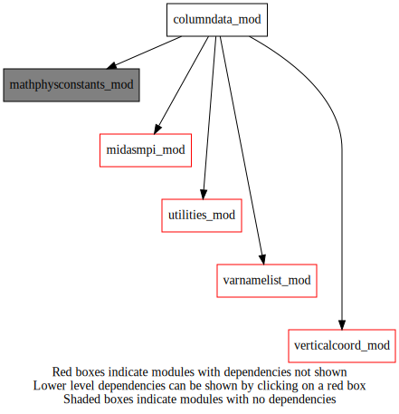
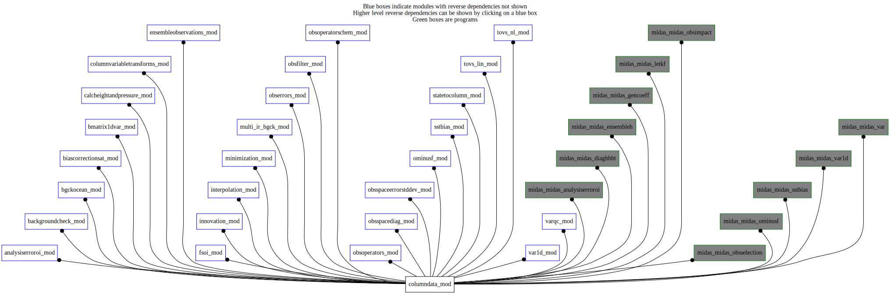

Dependency Diagrams:
 Direct Dependency Diagram¶
 Reverse Dependency Diagram¶
Description
MODULE columnData_mod (prefix=’col’ category=’6. High-level data objects’)
- Purpose
A derived type and related procedures for storing and manipulating vertical columns of analysis variables on model or analysis grid levels. These columns are generally produced by horizontally interpolating a gridStateVector object to the observation locations.
Quick access
- Types
- Variables
- Routines
col_allocate(),col_deallocate(),col_getallcolumns(),col_getcolumn(),col_getelem(),col_getheight(),col_getlevindexfromvarlevindex(),col_getnumcol(),col_getnumlev(),col_getoffsetfromvarno(),col_getpressure(),col_getvarnamefromk(),col_getvco(),col_setheightsfc(),col_setup(),col_setvco(),col_varexist(),col_zero()Needed modules
midasmpi_mod: MODULE midasMpi_mod (prefix=’mmpi’ category=’8. Low-level utilities and constants’)
varnamelist_mod: MODULE varNameList (prefix=’vnl’ category=’7. Low-level data objects’)
verticalcoord_mod: MODULE verticalcoord (prefix=’vco’ category=’7. Low-level data objects’)
mathphysconstants_mod: MODULE MathPhysConstants_mod (prefix=’mpc’ category=’8. Low-level utilities and constants’)
utilities_mod: MODULE utilities_mod (prefix=’utl’ category=’8. Low-level utilities and constants’)Types
- type columndata_mod/struct_columndata¶
- Type fields
% addheightsfcoffset [logical ]
% all (*,*) [real ,pointer]
% allocated [logical ]
% heightsfc (*) [real ,pointer]
% lat (*) [real ,pointer]
% mpi_local [logical ]
% nk [integer ]
% null [struct_vco ,pointer]
% numcol [integer ]
% oltv (*,*,*) [real ,pointer] :: Tangent linear operator of virtual temperature
% varexistlist (vnl_numvarmax) [logical ]
% varnumlev (*) [integer ,pointer]
% varoffset (*) [integer ,pointer]
% vco [struct_vco ,pointer]
Variables
- columndata_mod/col_minvalvarkindch (vnl_numvarmax) [real,public]¶
- columndata_mod/col_rhumin [real,public]¶
Subroutines and functions
- subroutine columndata_mod/col_setup()¶
- subroutine columndata_mod/col_zero(column)¶
- Arguments
column [struct_columndata ]
- Called from
bmat1d_sqrtb(),calcheight_col_nl_vcode5xxx(),simvar(),midas_var1d
- subroutine columndata_mod/col_allocate(column, numcol[, mpilocal_opt[, besilent_opt[, settozero_opt[, varnames_opt]]]])¶
- Arguments
column [struct_columndata ]
numcol [integer ,in]
- Options
mpilocal_opt [logical ]
besilent_opt [logical ]
settozero_opt [logical ]
varnames_opt (*) [character ]
- Called from
aer_analysiserror(),aer_dayssincelastobs(),ocebg_bgchecksst(),bcs_getradiosondeweight(),bmat1d_setupbens(),fso_ensemble(),inn_setupcolumnsontrllev(),min_minimize(),ose_compute_hbht_static(),ose_compute_hbht_ensemble(),oer_seterrbackscatanisice(),osd_calcinflation(),omf_ominusf(),omf_ominusfens(),midas_sstbias,midas_analysiserroroi,midas_diaghbht,midas_ensembleh,midas_letkf,midas_obsimpact,midas_obsselection,midas_var,midas_var1d- Call to
vnl_varlistindex(),col_getnumlev(),utl_abort(),vnl_varlevelfromvarname()
- subroutine columndata_mod/col_deallocate(column)¶
- Arguments
column [struct_columndata ]
- Called from
aer_analysiserror(),aer_dayssincelastobs(),ocebg_bgchecksst(),bmat1d_setupbens(),fso_ensemble(),min_minimize(),ose_compute_hbht_static(),ose_compute_hbht_ensemble(),oer_seterrbackscatanisice(),osd_calcinflation(),midas_sstbias,midas_diaghbht
- function columndata_mod/col_varexist([column_opt, varname])¶
- Options
column_opt [struct_columndata ]
- Arguments
varname [character ,in]
- Return
varexist [logical ]
- Called from
calczandp_col_nl(),calczandp_col_tl(),calczandp_col_ad(),czp_calcreturnheight_col_nl(),calcheight_col_tl(),calcheight_col_ad(),czp_calcreturnpressure_col_nl(),calcpressure_col_nl_vcode5xxx(),calcpressure_col_tl(),calcpressure_col_ad(),col_getpressure(),col_getheight(),col_getallcolumns(),col_getcolumn(),col_getelem(),inn_setupcolumnsontrllev(),inn_setupcolumnsonanlinclev(),int_vinterp_col(),oop_sst_nl(),oop_htl(),s2c_nl(),s2c_bgcheck_bilin(),tvslin_rttov_tl(),tvslin_rttov_ad(),tvs_fillprofiles(),vqc_nltl(),vqc_listrej()
- function columndata_mod/col_getoffsetfromvarno(column, varnum[, varnumberchm_opt[, modelname_opt]])¶
- Arguments
column [struct_columndata ]
varnum [integer ,in]
- Options
varnumberchm_opt [integer ,in,]
modelname_opt [character ,in,]
- Return
offset [integer ]
- Called from
setfgefam(),setfgefamz(),setfgett(),setfgesurf(),oop_zzz_nl(),oop_sfc_nl(),oop_had()- Call to
- function columndata_mod/col_getlevindexfromvarlevindex(column, varlevindex)¶
- Arguments
column [struct_columndata ]
varlevindex [integer ,in]
- Return
levindex [integer ]
- Called from
- Call to
- function columndata_mod/col_getvarnamefromk(column, kindex)¶
- Arguments
column [struct_columndata ]
kindex [integer ,in]
- Return
varname [character ]
- Called from
- Call to
- function columndata_mod/col_getpressure(column, ilev, headerindex, varlevel)¶
- Arguments
column [struct_columndata ,in]
ilev [integer ,in]
headerindex [integer ,in]
varlevel [character ,in]
- Return
pressure [real ]
- Called from
bcs_gettrialpredictors(),bmat1d_setupbens(),irbg_doqualitycontrol(),setfgefam(),setfgett(),setfgedif(),setfgegps(),oer_sw(),oer_seterrgpsro(),filt_toporadiosonde(),filt_topochemistry(),oop_vobslyrs(),oop_ppp_nl(),oop_zzz_nl(),oop_sfc_nl(),oop_gpsro_nl(),oop_gpsgb_nl(),oop_had(),oop_calcgpsrojacobian(),oop_calcgpsgbjacobian(),osd_obsdiagnostics(),tvslin_rttov_tl(),tvslin_rttov_ad(),tvs_fillprofiles()- Call to
- function columndata_mod/col_getheight(column, ilev, headerindex, varlevel)¶
- Arguments
column [struct_columndata ,in]
ilev [integer ,in]
headerindex [integer ,in]
varlevel [character ,in] :: ‘ // varLevel)
- Return
height [real ]
- Called from
calcheight_col_nl_vcode2100x(),calcpressure_col_nl_vcode2100x(),irbg_doqualitycontrol(),setfgefam(),setfgefamz(),setfgesurf(),setfgedif(),setfgegps(),oer_seterrgpsro(),oer_seterrgpsgb(),filt_toposurface(),filt_toporadiosonde(),filt_topoprofiler(),filt_topoaladin(),filt_radvel(),filt_gpsro(),filt_topochemistry(),oop_vobslyrs(),oop_ppp_nl(),oop_zzz_nl(),oop_sfc_nl(),oop_radvel_nl(),oop_gpsro_nl(),oop_gpsgb_nl(),oop_calcgpsrojacobian(),oop_calcgpsgbjacobian(),tvs_fillprofiles()- Call to
- subroutine columndata_mod/col_setheightsfc(column, headerindex, height)¶
- Arguments
column [struct_columndata ]
headerindex [integer ,in]
height [real ,in]
- Called from
- function columndata_mod/col_getallcolumns(column[, varname_opt])¶
- Arguments
column [struct_columndata ,in]
- Options
varname_opt [character ,in,]
- Return
allcolumns (*,*) [real ,pointer]
- Called from
calcheight_col_nl(),calcpressure_col_nl(),calcheightcoeff_col(),eob_setvertlocation(),s2c_tl(),s2c_ad(),s2c_nl()- Call to
- function columndata_mod/col_getcolumn(column, headerindex[, varname_opt])¶
- Arguments
column [struct_columndata ,in]
headerindex [integer ,in]
- Options
varname_opt [character ,in,]
- Return
onecolumn (*) [real ,pointer]
- Called from
bcs_gettrialpredictors(),bmat1d_setupbens(),bmat1d_bsqrthi(),bmat1d_bsqrthiad(),bmat1d_bsqrtens(),bmat1d_bsqrtensad(),calcheight_col_nl(),calcpressure_col_nl(),inn_setupcolumnsontrllev(),inn_setupcolumnsonanlinclev(),int_vinterp_col(),ose_compute_hbht_static(),oer_sw(),oop_ppp_nl(),oop_had(),osd_obsdiagnostics(),pressureprofilemonotonicitycheck(),s2c_nl(),s2c_bgcheck_bilin(),tvslin_rttov_tl(),tvslin_rttov_ad(),tvs_fillprofiles(),var1d_transfercolumntoygrid()- Call to
- function columndata_mod/col_getelem(column, ilev, headerindex[, varname_opt])¶
- Arguments
column [struct_columndata ,in]
ilev [integer ,in]
headerindex [integer ,in]
- Options
varname_opt [character ,in,]
- Return
value [real ]
- Called from
ocebg_bgchecksst(),bcs_gettrialpredictors(),bcs_getradiosondeweight(),bmat1d_setupbens(),calcpressure_col_nl_vcode2100x(),calcpressure_col_nl_vcode5xxx(),irbg_doqualitycontrol(),setfgefam(),setfgefamz(),setfgett(),setfgesurf(),setfgedif(),setfgegps(),oer_seterrgpsro(),oer_seterrgpsgb(),oer_seterrbackscatanisice(),filt_toporadiosonde(),filt_topoaisw(),filt_topotovs(),filt_topochemistry(),oop_ppp_nl(),oop_zzz_nl(),oop_sfc_nl(),oop_sst_nl(),oop_hydro_nl(),oop_ice_nl(),oop_radvel_nl(),oop_gpsro_nl(),oop_gpsgb_nl(),oop_htl(),oop_had(),oop_calcgpsrojacobian(),oop_calcgpsgbjacobian(),sstb_getbiascorrection(),tvslin_rttov_tl(),tvs_fillprofiles()- Call to
- function columndata_mod/col_getnumlev(column, varlevel[, varname_opt])¶
- Arguments
column [struct_columndata ,in]
varlevel [character ,in]
- Options
varname_opt [character ,in,]
- Return
nlev [integer ]
- Called from
bgck_gpsro(),bcs_gettrialpredictors(),calcpressure_col_nl_vcode2100x(),calcheightcoeff_col(),col_allocate(),eob_setvertlocation(),inn_setupcolumnsonanlinclev(),inn_computeinnovation(),int_vinterp_col(),irbg_doqualitycontrol(),ose_compute_hbht_static(),setfgefam(),setfgefamz(),setfgett(),setfgedif(),setfgegps(),oer_sw(),oer_seterrgpsro(),oer_seterrgpsgb(),filt_toposurface(),filt_toporadiosonde(),filt_topoprofiler(),filt_topoaladin(),filt_radvel(),oop_vobslyrs(),oop_ppp_nl(),oop_sfc_nl(),oop_gpsro_nl(),oop_gpsgb_nl(),oop_htl(),oop_had(),oop_calcgpsrojacobian(),oop_calcgpsgbjacobian(),osd_calcinflation(),osd_obsdiagnostics(),tvslin_rttov_tl(),tvslin_rttov_ad(),tvs_fillprofiles(),midas_letkf- Call to
- function columndata_mod/col_getnumcol(column)¶
- Arguments
column [struct_columndata ,in]
- Return
numcolumn [integer ]
- Called from
ocebg_bgchecksst(),calcheight_col_nl_vcode2100x(),calcpressure_col_nl_vcode2100x(),calcpressure_col_nl_vcode5xxx(),calcheightcoeff_col(),fso_ensemble(),inn_setupcolumnsontrllev(),inn_setupcolumnsonanlinclev(),int_vinterp_col(),min_minimize(),ose_compute_hbht_static(),ose_compute_hbht_ensemble(),oop_htl(),osd_calcinflation(),s2c_bgcheck_bilin(),midas_diaghbht,midas_var1d
- function columndata_mod/col_getvco(column)¶
- Arguments
column [struct_columndata ]
- Return
vco_ptr [struct_vco ,pointer]
- Called from
bgck_gpsro(),ocebg_bgchecksst(),czp_calcreturnheight_col_nl(),calcheight_col_tl(),calcheight_col_ad(),czp_calcreturnpressure_col_nl(),calcpressure_col_nl_vcode5xxx(),calcpressure_col_tl(),calcpressure_col_ad(),calcheightcoeff_col(),fso_ensemble(),calcfcsterror(),simvar(),min_minimize(),ose_compute_hbht_static(),ose_compute_hbht_static_chem(),ose_compute_hbht_ensemble(),setfgedif(),setfgegps(),oop_gpsro_nl(),oop_htl(),oop_had(),oop_calcgpsgbjacobian(),osd_calcinflation(),tvslin_rttov_tl(),tvslin_rttov_ad(),tvs_fillprofiles(),midas_diaghbht,midas_var1d
- subroutine columndata_mod/col_setvco(column, vco_ptr)¶
- Arguments
column [struct_columndata ]
vco_ptr [struct_vco ,pointer]
- Called from
aer_analysiserror(),aer_dayssincelastobs(),ocebg_bgchecksst(),bcs_getradiosondeweight(),bmat1d_setupbens(),fso_ensemble(),inn_setupcolumnsontrllev(),min_minimize(),ose_compute_hbht_static(),ose_compute_hbht_ensemble(),oer_seterrbackscatanisice(),osd_calcinflation(),omf_ominusf(),omf_ominusfens(),midas_sstbias,midas_analysiserroroi,midas_diaghbht,midas_ensembleh,midas_gencoeff,midas_letkf,midas_obsimpact,midas_obsselection,midas_var,midas_var1d
{kind=link}
{kind=link}